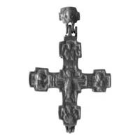
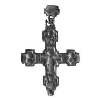

Catalog › CE-0403 · VSM2014-6
Encolpion bivalv din aramă, cat. 6, Muzeul Vladimir–Suzdal
sec. XV–XVI (1401–1600) · Semenovskoe, raionul Suzdal, Rusia · Muzeul-rezervație de stat Vladimir–Suzdal (Владимиро-Суздальский музей-заповедник), fondul „Metal” (Металл), inv. В-41647
double-sided reliquary cross (enkolpion), aramă; c. XV–XVI (1401–1600); found at Semenovskoe, raionul Suzdal, Rusia; kept at Muzeul-rezervație de stat Vladimir–Suzdal (Владимиро-Суздальский музей-заповедник), fondul „Metal” (Металл).




Identificare
- Categorie
- Encolpion bivalv (relicvar)
- Material
- Aramă
- Tehnică
- Turnare în relief
- Dimensiuni
- Î 95 × L 60 × Gr 7 mm
Iconografie
- Avers
- Sf. Ioan
- Descriere avers
- În centru, Răstignirea. În casetele de la capetele brațelor laterale, busturi ale Maicii Domnului și ale lui Ioan Evanghelistul în semiprofil spre Hristos; la capătul de sus și de jos, busturi de arhangheli cu toiege.
- Revers
- Sf. Ioan
- Descriere revers
- Iconografie identică cu a valvei din față: în centru Răstignirea; la capetele brațelor laterale Maica Domnului și Ioan Evanghelistul; sus și jos arhangheli. Diferența: urechi de prindere simple pe una dintre valve, duble pe cealaltă.
Datare și atribuire
- Datare
- sec. XV–XVI (1401–1600)
- Centru
- Necunoscut
- Tipologie
- cruce cu terminații în formă de cruce și centru pătrat
Descoperire
- Localitate
- Semenovskoe
- Regiune
- raionul Suzdal
- Țară
- Rusia
- Context
- Descoperire izolată
- Coordonate
- 56.3358° N, 40.4441° E
- Precizia locului
- Doar localitatea
Păstrare și referințe
- Colecție
- Muzeul-rezervație de stat Vladimir–Suzdal (Владимиро-Суздальский музей-заповедник), fondul „Metal” (Металл)
- Nr. inventar
- В-41647
- Bibliografie
- Н. А. Кокорина (сост.), Литые нагрудные кресты с древнерусской иконографией из фондовой коллекции «Металл» Государственного Владимиро-Суздальского музея-заповедника : Каталог, Vladimir, 2014, 43 p. [Kokorina 2014], cat. nr. 6, cu fotografia reprodusă la același număr. Text și imagini pe azbyka.ru: https://www.azbyka.ru/otechnik/ikona/litye-nagrudnye-kresty-s-drevnerusskoj-ikonografiej-iz-fondovoj-kollektsii-metall-gosudarstvennogo-vladimiro-suzdalskogo-muzeja-zapovednika/ (accesat 17.10.2026)
- Figura
- Kokorina 2014, fotografia de la cat. 6
- Planșe
- Kokorina 2014, catalogul crucilor-encolpion, nr. 6 (pagina tipărită nu e dată în ediția online)
- Observații
- Oglavie mobilă, masivă, goală, subdreptunghiulară, cu chipul lui Isus Hristos (Spas) pe față. Inscripțiile de pe bordurile din jurul centrului nu se citesc. Rezervor puțin adânc, cu margini neregulate; patinat; o ureche de prindere de la capătul de sus al valvei din spate lipsește. Găsit la lucrări de pământ într-o grădină din satul Semenovskoe, raionul Suzdal, de S. N. Fedosimova. Kokorina arată că obiectul nu e întreg: sunt două valve identice de la cruci diferite și oglavia separată, reunite de colecționarul de la care a intrat în muzeu; piesele au fost probabil create în aceeași vreme; tipul de oglavie cu Spas apare nu mai devreme de sec. XV. Coordonate: ale localității (aproximative), nu date în sursă.
Citare: Corpus Encolpiorum, CE-0403, Encolpion bivalv din aramă, cat. 6, Muzeul Vladimir–Suzdal, --root/piese/VSM2014-6/ (accesat 2026-10-17).